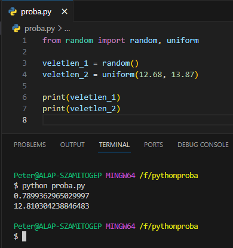
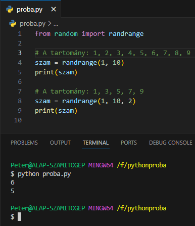
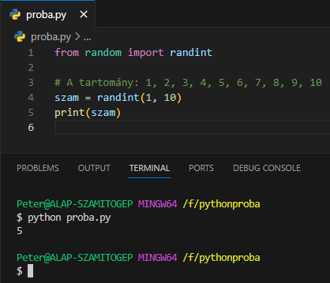
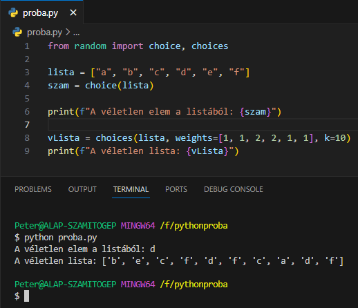
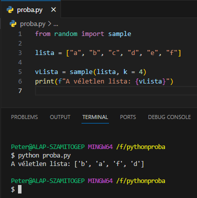
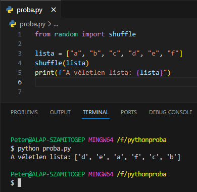

arrow_circle_up
Véletlenszámok:
-
Véletlenszámok létrehozásához be kell
import-álni a
random modult.
- Nézzünk néhány hasznos metódusát.
-
random(): visszaad egy
törtszámot 0.0 és 1.0 között.
-
uniform(mettől, meddig):
visszaad egy törtszámot a
mettől,
meddig tartományból,

-
randrange(mettől, meddig, lépés): visszaad egy egész számot a
mettől,
meddig - 1 tartományból, a
lépés-t figyelembevéve, ami, ha
nem jelöljük, akkor 1.

-
randint(mettől, meddig):
visszaad egy egész számot a
mettől,
meddig tartományból.

-
choice(lista): visszaad egy
tetszőleges elemet a lista-ból.
-
choices(lista): visszaad egy
tetszőleges elemekből álló listát a
lista-ból. Alapból egyelemű
listát, de be lehet állítani súlyozásokat a
lista elemeire (weights), és hogy hány elemet generáljon
k.

-
sample(lista): visszaad egy
tetszőleges elemekből álló listát a
lista-ból. Alapból egyelemű
listát, de be lehet állítani hogy hány elemet generáljon
k, ahol
k kisebb, mint a
lista elemszáma.

-
shuffle(lista): visszaadja egy
lista megkevert listáját.

Források:
w3schools/python
python.org